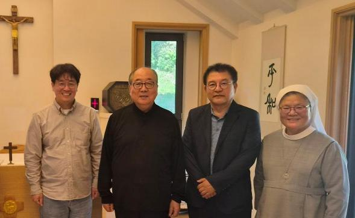
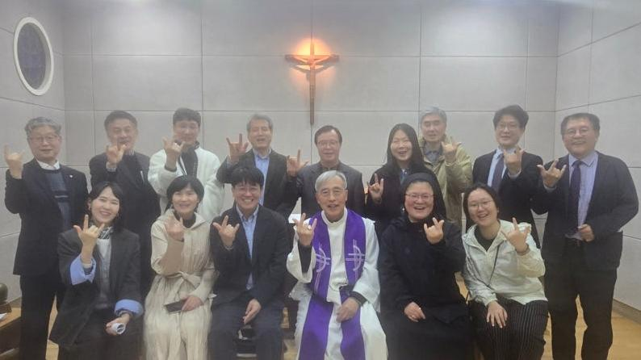

PAX CHRISTI INTERNATIONAL(PCI)은 비폭력, 평화, 화해 실현을 위해 활동하는 국제 가톨릭 평화운동 단체입니다. 가톨릭 교회의 모든 구성원이 동등하게 참여하며 전 세계에서 활동합니다.
팍스크리스티코리아(PAX CHRISTI KOREA, PCK)는 PCI 정신을 바탕으로 한반도의 분단 극복과 통일 및 동아시아와 세계 평화 실현을 위해 노력하는 PCI 한국 지부입니다.
PCK소개
팍스크리스티코리아(Pax Christi Korea, PCK)는 'Pax Christi International(PCI)'과 보조를 맞춰 한국과 동아시아 현실에 부합하는 평화 운동을 활발하게 전개하고 있습니다.
PCK는 국제 가톨릭평화운동 Pax Christi International의 한국 지부로 2019년 8월 24일 창립되었습니다. PCK는 가톨릭 교회의 모든 구성원 –평신도, 성직자, 수도자-이 동등하게 참여하는 가톨릭 평화 운동 단체입니다. PCK 제3기 (2024-25) 공동대표는 평신도 2명과 수도자 1명, 성직자 1명으로 구성되었습니다: 조재선 (베드로), 김미란(마리안나), 이선중 (로마나) 수녀 그리고 이기헌 베드로 주교(전 의정부교구).
팍스크리스티는 1945년 초 전쟁을 겪은 프랑스에서 평화와 화해 운동으로 시작하였습니다. 2026년 현재 5대륙에 걸쳐 17개 국가의 지부와 60개 국가의 약 120개 단체에서 약 50만 명이 회원으로 참여하고 있습니다. 국제 본부는 벨기에 브뤼셀에 있습니다.
PCK는 모든 폭력에 반대하며 한반도의 분단 극복과 통일 및 아시아와 세계 평화 실현을 위해 노력하는 가톨릭 평화운동 단체입니다. "정의로운 평화"(Just Peace)에 기반하여 비폭력, 화해, 평등, 연대의 가치에 주목하며 정의로운 평화와 생태적인 평화를 실현하기 위해 노력합니다. 한반도에서 핵무기 위협과 전쟁 위기가 고조되고 있는 2026년 현재 약 600만명에 달하는 가톨릭 신자의 평화를 위한 기도와 실천이 그 어느 때보다 요구되고 있습니다.
PCK는 특히 2027년 서울 세계청년대회(WYD)를 계기로 한반도와 동북아시아 그리고 세계 가톨릭 청년 평화운동 활성화의 촉매와 마중물이 되고자 합니다. PCK는 예수 그리스도의 제자로서 깨어 기도하며 '그리스도의 평화'를 세상에 나누고자 하는 모는 분의 참여를 진심으로 환영합니다.
갈등 전환
폭력적 갈등을 사전에 예방하기 위해 노력하고, 갈등이 진행 중인 경우 대안적 해결책을 제시합니다. 민족갈등, 교파분열을 중재하고 갈등지역 방문, 평화 캠페인, 활동을 수행합니다.
평화 구축
진리와 정의에 입각하여 화해를 실현하도록 돕는 평화구축(peace building)을 추구합니다.
평화 교육과 청년활동 지원
젊은이들의 교류, 대안적 평화 봉사, 자발적 평화 활동, 평화 주간(Peace Week)과 같이 '평화 교육과 청년 활동'을 지원합니다.
비폭력 모임 조직
비폭력적 방법을 통한 사회변화를 추구하기 위해 다양한 회의와 토론 모임을 조직합니다.
종교간 대화와 협력
평화를 위해 교파 분열을 중재하고 종교간 대화와 협력의 기회를 마련합니다.
각국 옹호(Advocacy) 활동 참여
각 나라에 고유하고 그 나라의 사회정치적 맥락에 어울리는 옹호(Advocacy) 활동에 참여합니다.
협력단체 교류
협력단체들과 능력을 증진하고, 활동의 효과를 높이기 위해 협력단체들끼리의 교류를 주선하고, 자문도 제공합니다.
평화의 날 담화 실천
교황님의 평화의 날 담화를 숙고하고 실천하며 교회 내 전파를 위해 노력합니다.
PCK 공동대표와 이사회
2026년 정기 이사회
상임대표
조재선 (베드로)
남성평신도 대표 (상임대표)
여성평신도 대표
김미란 (마리안나)
여성평신도, 공동대표
성직자 대표
이기헌 (베드로) 주교
성직자 대표, 공동대표
수도자 대표
이선중 (로마나) 수녀
수도자 대표, 공동대표

이사회 명단
운영이사 총무이사 김태영(사무엘), 교육연구이사 박문수(프란치스코), 청년이사 장소현(데보라), 국제이사 이성훈(안셀모)
감사 사업감사 이석범(안드레아), 회계감사 추규정(요왕)
협력이사 박영만(요셉), 박창호(베드로), 신강협(요셉), 양윤하(수산나), 박소진(로사), 박창일(사도요한)

PCK 실천방법론
우리의 실천적 방법론은 복음적 비폭력과 가톨릭 사회교리를 바탕으로 '기도와 영성(Prayer)', '공부와 교육(Study)', '행동과 연대(Action)'라는 세 축의 실천 방법론을 따릅니다.
복음적 비폭력(Gospel Nonviolence)
무력과 증오의 악순환을 끊어내고, 그리스도의 비폭력 방식을 따라 대화와 용서, 능동적 저항으로 갈등을 전환합니다.
가톨릭 사회교리(Catholic Social Teaching)
인간 존엄성, 공동선, 보조성, 연대성의 원리에 기초하여 정치·경제·사회적 현실을 비판적으로 식별하고, 복음적 정의와 평화의 구조를 세워 나가는 교회의 실천적 나침반
기도와 영성(Prayer)
복음적 비폭력의 마음을 벼리고, 화해와 정의를 지향하며 개인과 공동체의 내적 평화를 심화하는 영적 성찰
기도(Prayer)는 우리 각자의 내면과 세상 안에서 움직이시는 성령께 마음을 여는 행위를 가리킵니다. '마음을 연다'는 것은 성령이 활동하시도록 자신의 이성, 신념과 이념을 내려놓는 것을 가리킵니다. '자기 비움(kenosis)' 즉 겸손을 실천하는 태도라 할 수 있습니다.
공부와 교육(Study)
가톨릭 사회교리와 평화학을 바탕으로 갈등의 구조적 원인을 비판적으로 분석하고, 비폭력 평화 문화를 확산하는 지적 탐구
공부(Study)는 우리가 해결하기를 바라는 현상이나 문제를 연구하는 단계를 가리킵니다. 이 문제들의 범위는 각자가 살고 있는 지역에서부터 국가, 지구, 그리고 우주(=창조계)에 이르기까지 넓은 영역에 걸쳐 있습니다. 교회에서는 이를 달리 '시대의 징표(sign of the times) 탐구'라 부릅니다. 여기서는 이성(理性)이 중요한 역할을 합니다.
행동과 연대(Action)
분쟁과 불의의 현장에 구체적으로 개입하며, 국내외 시민사회 및 국제 네트워크와 함께 군축·생태·인권을 실현하는 실천적 연대
실천(Action)은 앞의 두 단계를 거치며 얻은 결론을 행동으로 옮기는 단계입니다. 실천방식은 정치인·행정부에 항의 서한 전달, 거리 캠페인, 행진, 집회, 비폭력 직접 행동 등으로 다양합니다. 비폭력 평화주의를 기반으로 실천 주체들이 각 현안 해결에 적합한 방식들을 다양하게 선택할 수 있습니다.
Pax Christi는 문제가 해결될 때까지 이 '기도→ 공부 → 실천' 과정을 반복합니다.(Pax Christi USA Action Manual 참조)
Pax Christi의 3단계 실천 방법론은 사회교리의 3단계 실천방법론(관찰 → 판단 → 실천)과는 차이가 있습니다. 사회교리 3단계 방법론은 관찰, 판단에서 인간의 이성을 주요 기능으로 사용하는 반면, Pax Christi 방법론에서는 기도가 방법론의 시작이자 끝인 것이 특징입니다. 처음부터 성령을 초대해 모든 단계에 함께 하시게 한다는 것을 목표로 합니다. Pax Christi의 '공부'는 사회교리 방법론의 '관찰, 판단'을 포괄합니다. 실천은 두 방법론에 공통적입니다. Pax Christi의 3단계 방법론은 사회교리의 3단계 실천 방법론보다 한 단계를 더 두고 있는 셈입니다. 모든 단계에 기도하는 자세로 임하겠다는 Pax Christi의 실천 방법론은 가톨릭 평화실천에서 Pax Christi만의 고유한 방식입니다.
참여안내
PCK는 예수 그리스도의 제자로서 깨어 기도하며 '그리스도의 평화'를 세상에 나누고자 하는 모든 분의 참여를 진심으로 환영합니다.
PCK 회원은 정회원과 협력회원으로 구분됩니다. 정회원은 정기적으로 회비를 납부하고 활동에 참여합니다. 협력회원은 기도, 재정, 전문성 등 여건이 허락하는 범위에서 기여할 수 있습니다.
회원 가입을 원하시는 분은 다음 링크(회원가입신청)을 눌러서 신청해 주시기 바랍니다.
문의 010-9689-2027 · paxchristikorea@gmail.com
사무국 서울시 마포구 토정로 2길 33, 국제가톨릭협회 210호
오시는 길
대중교통으로 오시는 길
지하철을 이용하시면 2·6호선 합정역에서 도보로 이동하실 수 있습니다. 12분 소요 예상됩니다. 버스로는 합정역 인근 정류장에 내려 도보로 오시면 됩니다.